MecaStruct RdM Pro — Guide d'utilisation et rappels de RDM
Ce guide montre comment utiliser l'application onglet par onglet. Pour chaque calcul, il rappelle la théorie de résistance des matériaux et refait l'exemple de l'application à la main, pour que vous puissiez retrouver les chiffres affichés.
- Lancer l'application
- Comprendre l'écran
- La démarche RDM en 5 étapes
- Base de données (matériaux)
- Sections
- Poutres
- Treillis
- Traction / compression
- Cisaillement et matage
- Torsion
- Flexion
- Flambage
- Tenseurs, Mohr et critères
- Hooke et jauges
- Convertisseur d'unités
- Sur quoi reposent les calculs
- Pièges fréquents
1. Lancer l'application
- Ouvrez MATLAB (R2025b, testé). Le Symbolic Math Toolbox est facultatif : sans lui, l'application calcule en numérique.
- Placez le dossier courant de MATLAB sur
5_MecaStruct_RdM_Pro. - Tapez dans la fenêtre de commande :
app = MecaStruct_App();
À l'ouverture, chaque onglet est déjà rempli avec un exemple d'école. Cliquez sur Calculer pour voir le résultat, puis modifiez les valeurs pour votre propre problème. Le bouton Recharger l'exemple remet les valeurs de départ.
Pour vérifier que tout fonctionne : run('tests/run_all_tests.m') (tous les tests doivent réussir).
2. Comprendre l'écran
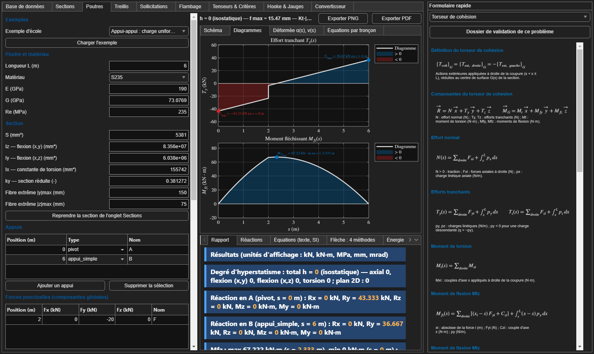
| Zone | Contenu |
|---|---|
| Gauche : saisie | Données du problème (dimensions, matériau, charges) et boutons Calculer et Recharger l'exemple. Les tableaux (appuis, forces, nœuds) ont des boutons Ajouter et Supprimer la sélection. |
| Centre haut : graphiques | Une ligne de résumé (le résultat clé et la mention vérifié ou NON vérifié), puis des onglets de tracés. Exporter PNG et Exporter PDF enregistrent le tracé affiché. |
| Centre bas : rapport | Le calcul détaillé étape par étape, avec les formules et les valeurs en unités SI. C'est la partie à lire pour comprendre ou recopier un calcul. |
| Droite : formulaire rapide | La fiche de cours de l'onglet affiché : formules, signification de chaque lettre, unités. Le menu déroulant permet d'ouvrir une autre fiche. |
3. La démarche RDM en 5 étapes
Tous les onglets suivent la même chaîne. Si vous ne retenez qu'une chose, retenez celle-ci :
Étape 1 : principe fondamental de la statique (PFS)
Un solide en équilibre vérifie $\sum \vec F_{ext} = \vec 0$ et $\sum \vec M_A(\vec F_{ext}) = \vec 0$. En 2D, cela donne trois équations : $\sum F_x = 0$, $\sum F_y = 0$ et $\sum M_{Az} = 0$. Chaque liaison apporte des inconnues : 1 pour un appui simple ($Y$), 2 pour un pivot ($X, Y$) et 3 pour un encastrement ($X, Y, M$).
Degré d'hyperstatisme $h$ = nombre d'inconnues − nombre d'équations. Si $h = 0$, le système est isostatique et le PFS suffit. Si $h > 0$, il faut des équations de déformation en plus (Ménabréa, superposition).
Étape 2 : torseur de cohésion
On coupe la poutre à l'abscisse $s$. Le torseur de cohésion représente l'action de la partie droite sur la partie gauche (convention du cours) :
$$\{T_{coh}\}_G = \{\text{actions extérieures à droite}\}_G = -\{\text{actions à gauche}\}_G$$
| Composante | Nom | Sollicitation |
|---|---|---|
| $N$ | effort normal (N > 0 en traction) | traction / compression |
| $T_y,\ T_z$ | efforts tranchants | cisaillement |
| $M_t$ | moment de torsion | torsion |
| $M_{fy},\ M_{fz}$ | moments fléchissants | flexion |
Relations utiles pour vérifier un diagramme : $\dfrac{dT_y}{ds} = q$ et $T_y = -\dfrac{dM_{fz}}{ds}$. Le moment est maximal là où l'effort tranchant s'annule ou change de signe. Une force ponctuelle crée un saut de $T_y$, et un couple ponctuel crée un saut de $M_{fz}$.
Étapes 3 à 5 : en bref
| Sollicitation | Contrainte | Déformation | Condition de résistance |
|---|---|---|---|
| Traction | $\sigma = N/S$ | $\Delta L = NL/(ES)$ | $K_t\,\sigma \le R_e/s$ |
| Cisaillement | $\tau_{moy} = T/S$ | $\gamma = \tau/G$ | $k\,T/S \le \tau_e/s$ |
| Torsion (arbre rond) | $\tau_{max} = M_t\,R/I_x$ | $\theta = M_t/(G I_x)$ | $K_t\,\tau_{max} \le \tau_e/s$ et $\theta \le \bar\theta$ |
| Flexion | $\sigma = -M_{fz}\,y/I_z$ | $E I_z v'' = M_{fz}$ | $K_t\,|M_f|/W \le R_e/s$ |
Ici, $s$ est le coefficient de sécurité, $K_t$ le coefficient de concentration de contrainte et $\tau_e$ la limite élastique en cisaillement : $R_e/2$ selon Tresca et $R_e/\sqrt3$ selon Von Mises.
4. Onglet Base de données
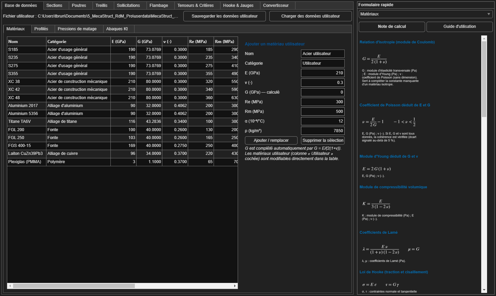
L'onglet contient quatre sous-onglets :
- Matériaux : E, G, ν, Re, Rm, α et ρ. Tous les autres onglets y puisent leurs valeurs.
- Profilés : catalogue IPN, IPE, HEA, HEB, UPN et UAP.
- Pressions de matage : valeurs de Padm selon la liaison.
- Abaques Kt : coefficients de concentration de contrainte.
Vous pouvez ajouter vos propres matériaux et profilés, puis cliquer sur Sauvegarder les données utilisateur (fichier .mat).
5. Onglet Sections
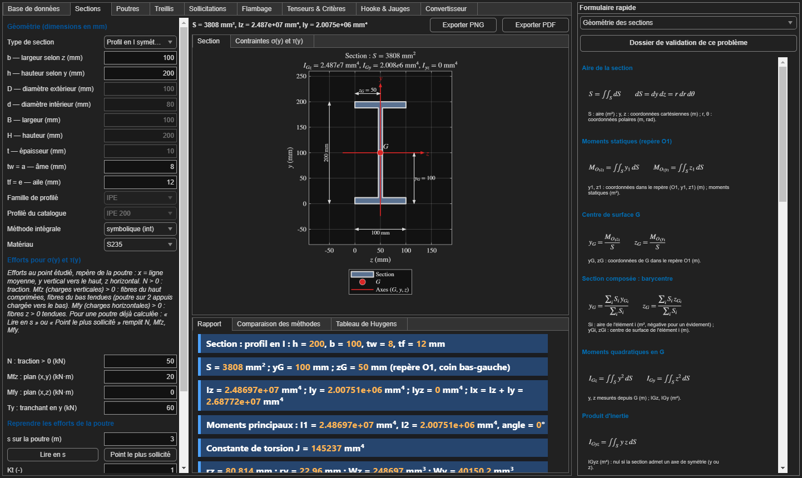
Utilisation. Choisissez le type de section (rectangle, disque, couronne, I, T, U, L, rectangle creux ou profilé du catalogue), entrez les dimensions en mm, puis cliquez sur Calculer. Le bouton Utiliser pour la poutre / le flambage envoie la section aux autres onglets.
Rappels
- Aire : $S = \iint dS$.
- Centre de surface : $y_G = \dfrac{\sum S_i\,y_{Gi}}{\sum S_i}$, même formule pour $z_G$. On découpe la section en rectangles.
- Moment quadratique : $I_{Gz} = \iint y^2\,dS$. Il mesure la résistance à la flexion autour de l'axe $z$. La matière loin de l'axe compte beaucoup ($y^2$), c'est pourquoi les profilés en I sont efficaces.
- Rectangle : $I_z = \dfrac{b h^3}{12}$. Disque : $I_z = \dfrac{\pi D^4}{64}$ et $I_x = \dfrac{\pi D^4}{32}$ (polaire, utilisé en torsion).
- Huygens (déplacer un axe) : $I_{\Delta} = I_G + S\,d^2$.
- Module de flexion : $W_z = I_z / y_{max}$. Rayon de giration : $r = \sqrt{I/S}$, utilisé en flambage.
- $S = 2 \times 100 \times 12 + 8 \times 176 = 2400 + 1408 = 3808$ mm²
- Astuce « grand rectangle moins les deux vides » : $I_z = \dfrac{100 \times 200^3 - 92 \times 176^3}{12} = \dfrac{8{,}000 \cdot 10^8 - 5{,}016 \cdot 10^8}{12} = 2{,}487 \cdot 10^7$ mm⁴
- $I_y = 2 \times \dfrac{12 \times 100^3}{12} + \dfrac{176 \times 8^3}{12} = 2{,}008 \cdot 10^6$ mm⁴
- $W_z = I_z / 100 = 248\,697$ mm³
L'onglet trace aussi $\sigma(y)$ et $\tau(y)$ dans la section. Pour Jourawski, voir la partie Cisaillement.
6. Onglet Poutres
Utilisation.
- Choisissez un exemple d'école (appui-appui, console, hyperstatique, deux travées) ou partez de zéro.
- Entrez la longueur L, le matériau et la section. Reprendre la section de l'onglet Sections recopie S, Iz, Iy, etc.
- Remplissez les tableaux Appuis (position et type), Forces ponctuelles, Couples et Charges réparties. Une force vers le bas est négative ($F_y < 0$).
- Cliquez sur Calculer, puis consultez les onglets Schéma, Diagrammes, Déformée et Équations par tronçon. Côté rapport : Réactions, Flèche (4 méthodes) et Énergie.
1. Réactions (PFS). La charge répartie vaut $10 \times 6 = 60$ kN, appliquée au milieu (3 m).
- $\sum M_A = 0$ : $6\,Y_B - 20 \times 2 - 60 \times 3 = 0$, donc $Y_B = 220/6 = $ 36,67 kN.
- $\sum F_y = 0$ : $Y_A = 80 - 36{,}67 = $ 43,33 kN.
2. Moment fléchissant (on somme les actions à gauche, ce qui donne le même résultat que la convention « droite »).
- Pour $0 \le s < 2$ : $M_{fz}(s) = 43{,}33\,s - 5\,s^2$, donc $M_{fz}(2) = 66{,}67$ kN·m.
- Pour $2 < s \le 6$ : $M_{fz}(s) = 43{,}33\,s - 5\,s^2 - 20(s-2)$.
- Le maximum est atteint là où $T_y = 0$ : $\dfrac{dM}{ds} = 23{,}33 - 10\,s = 0$, donc $s = 2{,}333$ m et $M_{max} = $ 67,22 kN·m.
3. Contrainte maximale (section de l'exemple : Iz = 8,356·10⁷ mm⁴, ymax = 150 mm) : $\sigma = \dfrac{67{,}22\cdot10^6 \times 150}{8{,}356\cdot10^7} = $ 120,7 MPa $\le R_e/s = 235/1{,}5 = 156{,}7$ MPa, vérifié.
4. Flèche, contrôle par superposition (E = 190 000 MPa, en N et mm) :
- Charge répartie seule, au milieu : $\dfrac{5 q L^4}{384 E I} = \dfrac{5 \times 10 \times 6000^4}{384 \times 190000 \times 8{,}356\cdot10^7} = 10{,}63$ mm.
- Force seule, au milieu (formulaire, a = 2 m) : environ 4,83 mm.
- Total : environ 15,46 mm. L'application trouve fmax = 15,47 mm à s = 2,915 m.
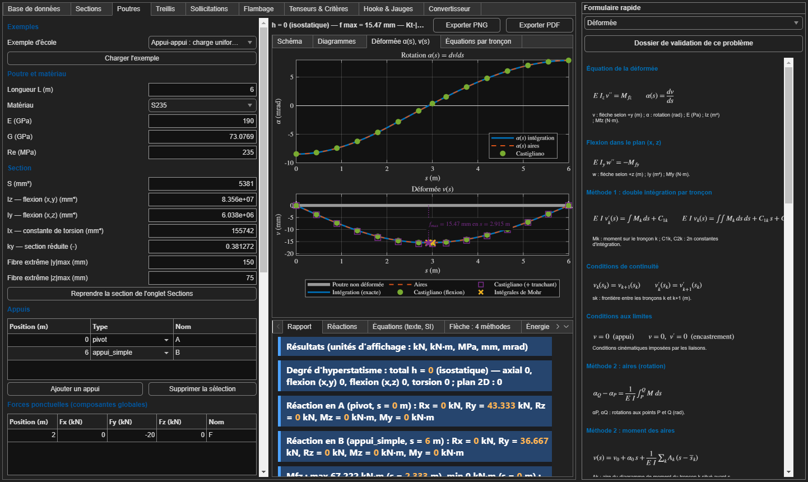
Les 4 méthodes de calcul de flèche
| Méthode | Principe |
|---|---|
| Double intégration | On intègre deux fois $E I_z v'' = M_{fz}(s)$ sur chaque tronçon. Les constantes viennent des appuis ($v = 0$) et de la continuité entre tronçons ($v$ et $v'$ continus). |
| Aires (Mohr) | La variation de rotation entre deux points est l'aire du diagramme $M/(EI)$ entre ces points. La flèche s'obtient par le moment de cette aire. |
| Castigliano | On ajoute une force fictive $F$ au point voulu, puis $f = \dfrac{\partial U}{\partial F}$ avec $U = \int \dfrac{M_f^2}{2EI}\,ds$. |
| Intégrales de Mohr | On applique une force unité au point voulu, puis $f = \int \dfrac{M\,\bar m}{EI}\,ds$. L'intégrale se lit dans la table de Mohr. |
Hyperstatique (exemples « hyperstatique » et « deux travées ») : on libère un appui, son effort devient une inconnue $X$, puis on écrit que le déplacement y est nul. Théorème de Ménabréa : $\partial U/\partial X = 0$.
7. Onglet Treillis
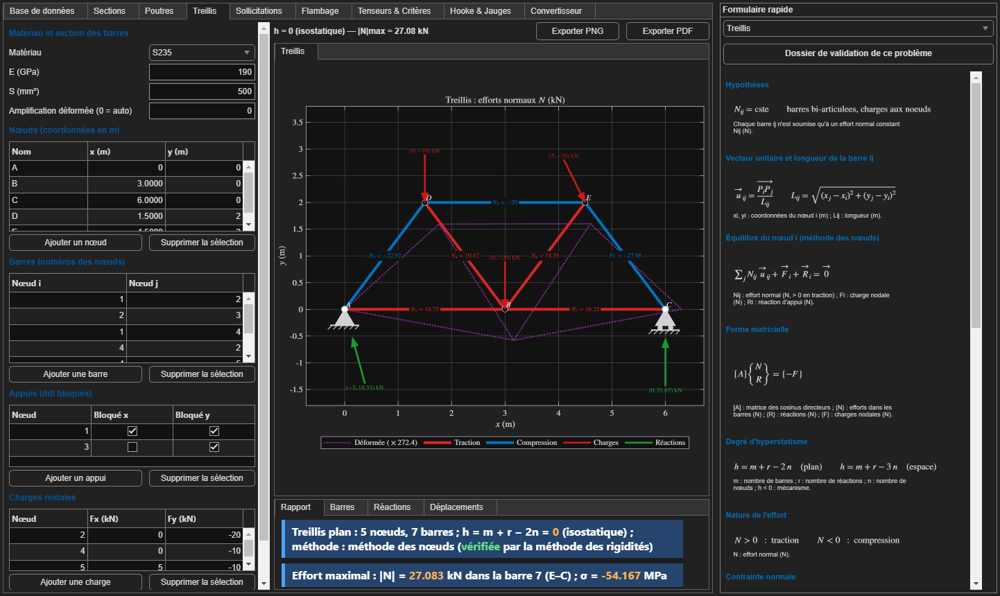
Utilisation. Saisissez les nœuds (coordonnées en m), les barres (numéros des deux nœuds), les appuis (cases Bloqué x et Bloqué y) et les charges nodales en kN. Choisissez ensuite le matériau et la section des barres.
Rappels
- Hypothèses : barres articulées à leurs extrémités et charges appliquées uniquement aux nœuds. Chaque barre ne subit alors qu'un effort normal $N$ constant.
- Hyperstatisme : $h = m + r - 2n$, avec $m$ barres, $r$ réactions et $n$ nœuds. Dans l'exemple : $7 + 3 - 2 \times 5 = 0$, le treillis est isostatique.
- Méthode des nœuds : on isole chaque nœud et on écrit $\sum N_{ij}\,\vec u_{ij} + \vec F_i + \vec R_i = \vec 0$, soit 2 équations par nœud. L'application résout le système complet sous forme matricielle.
- Une fois $N$ connu : $\sigma = N/S$ et $\Delta L = N L/(E S)$. Une barre comprimée doit aussi être vérifiée au flambage.
Dans l'exemple, l'effort maximal est |N| = 27,08 kN dans la barre E–C (compression), soit σ = −54,2 MPa avec S = 500 mm².
8. Onglet Sollicitations › Traction / compression
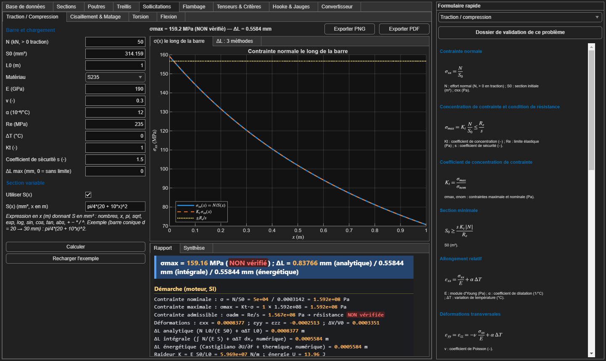
Utilisation. Entrez N (positif en traction), S0, L0, le matériau, ΔT, Kt et s. Pour une section variable, cochez Utiliser S(x) et tapez une formule, par exemple pi/4*(20 + 10*x)^2 (S en mm², x en m).
Rappels
- $\sigma = \dfrac{N}{S}$, $\quad \varepsilon = \dfrac{\sigma}{E} + \alpha\,\Delta T$, $\quad \Delta L = \dfrac{N L}{E S}$.
- Effet Poisson : $\varepsilon_{transversal} = -\nu\,\varepsilon$.
- Résistance : $K_t\,\sigma \le \dfrac{R_e}{s}$. Section minimale : $S \ge \dfrac{s\,K_t\,|N|}{R_e}$.
- Section variable : $\Delta L = \displaystyle\int_0^L \dfrac{N}{E\,S(x)}\,dx$.
- $\sigma_{max} = 50\,000 / 314{,}16 = 159{,}2$ MPa, supérieur à $235/1{,}5 = 156{,}7$ MPa : NON vérifié, il faut un diamètre un peu plus grand.
- Avec S constante : $\Delta L = \dfrac{50\,000 \times 1000}{190\,000 \times 314{,}16} = 0{,}838$ mm.
- Avec la vraie section conique (intégrale) : $\Delta L = 0{,}558$ mm. La méthode « analytique » à S constante surestime donc l'allongement, et le rapport le signale.
9. Onglet Sollicitations › Cisaillement & Matage
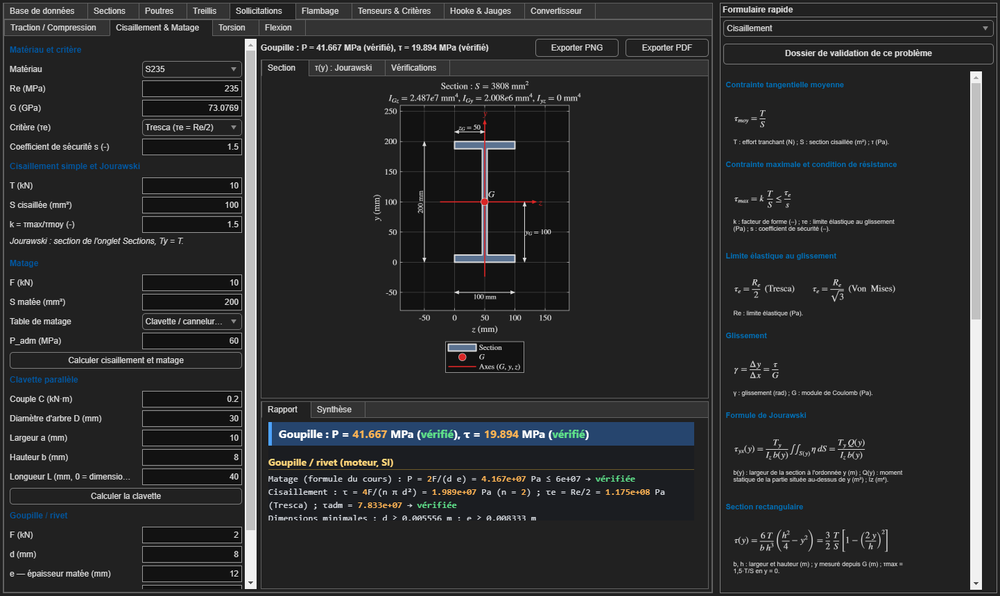
Rappels
- Cisaillement simple : $\tau_{moy} = T/S$ et $\tau_{max} = k\,T/S \le \tau_e/s$. Le facteur $k$ vaut 1,5 pour un rectangle et 4/3 pour un disque.
- Limite au glissement : $\tau_e = R_e/2$ (Tresca, plus prudent) ou $R_e/\sqrt3$ (Von Mises).
- Jourawski (répartition réelle de τ dans une poutre fléchie) : $\tau(y) = \dfrac{T_y\,Q(y)}{I_z\,b(y)}$, où $Q(y)$ est le moment statique de la partie située au-dessus de $y$ et $b(y)$ la largeur à ce niveau.
Vérification sur le profil en I de l'exemple, à l'axe neutre : $Q = 100 \times 12 \times 94 + 8 \times 88 \times 44 = 143\,776$ mm³, donc $\tau_{max} = \dfrac{60\,000 \times 143\,776}{2{,}487\cdot10^7 \times 8} = 43{,}4$ MPa, comme dans l'onglet Sections. - Matage (écrasement des surfaces en contact) : $p = F/S_{projetée} \le p_{adm}$. Les valeurs de $p_{adm}$ sont dans la base de données.
- Clavette : effort tangentiel $F = 2C/D$, cisaillement $\tau = F/(a L)$, matage $p = 4C/(D\,b\,L)$.
- Goupille (n sections cisaillées) : $\tau = \dfrac{4F}{n\pi d^2}$ et matage $p = \dfrac{2F}{d\,e}$ (formule du cours). Dans l'exemple : p = 41,7 MPa ≤ 60 MPa et τ = 19,9 MPa, vérifiés.
10. Onglet Sollicitations › Torsion
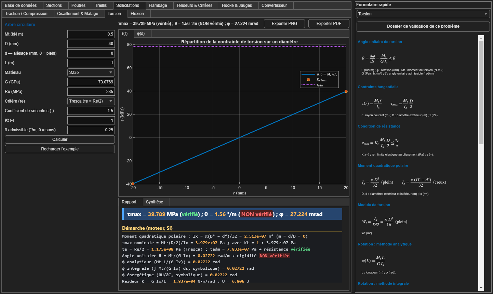
Rappels (arbre circulaire)
- $I_x = \dfrac{\pi D^4}{32}$ (plein) ou $\dfrac{\pi (D^4 - d^4)}{32}$ (creux).
- $\tau(r) = \dfrac{M_t\,r}{I_x}$, donc $\tau_{max} = \dfrac{M_t\,D/2}{I_x} = \dfrac{16\,M_t}{\pi D^3}$ pour un arbre plein.
- Angle unitaire : $\theta = \dfrac{M_t}{G I_x}$ en rad/m. Rotation totale : $\varphi = \theta\,L$.
- Deux vérifications : la résistance ($\tau_{max} \le \tau_e/s$) et la rigidité ($\theta \le \bar\theta$, souvent 0,25 °/m pour un arbre de transmission).
- $I_x = \pi \times 40^4/32 = 251\,327$ mm⁴
- $\tau_{max} = 0{,}5\cdot10^6 \times 20 / 251\,327 = 39{,}8$ MPa, inférieur à $\tau_{adm} = (235/2)/1{,}5 = 78{,}3$ MPa : résistance vérifiée.
- $\theta = \dfrac{0{,}5\cdot10^6}{73\,077 \times 251\,327} = 2{,}72\cdot10^{-5}$ rad/mm, soit 0,0272 rad/m ou 1,56 °/m, supérieur à 0,25 °/m : rigidité NON vérifiée.
11. Onglet Sollicitations › Flexion
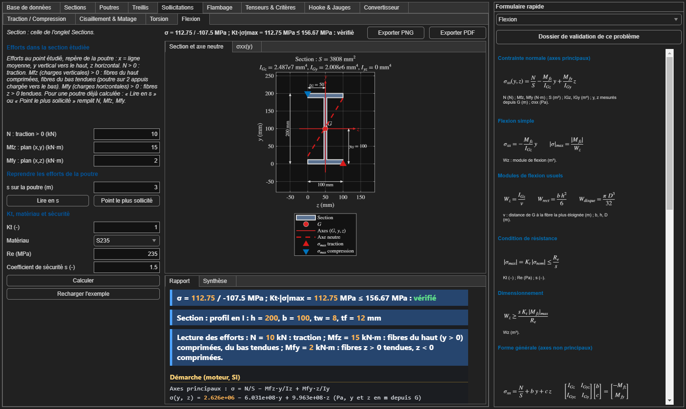
Cet onglet utilise la section de l'onglet Sections. Entrez N, Mfz et Mfy (le torseur au point étudié, lu par exemple sur les diagrammes de l'onglet Poutres).
Rappels
- Formule générale (axes principaux) : $\sigma_{xx}(y,z) = \dfrac{N}{S} - \dfrac{M_{fz}}{I_z}\,y + \dfrac{M_{fy}}{I_y}\,z$
- Flexion simple : $|\sigma|_{max} = \dfrac{|M_f|}{W}$. La contrainte est nulle sur l'axe neutre et maximale sur les fibres extrêmes.
- Les signes moins et plus viennent de la convention : un $M_{fz}$ positif comprime les fibres du haut ($y > 0$).
12. Onglet Flambage
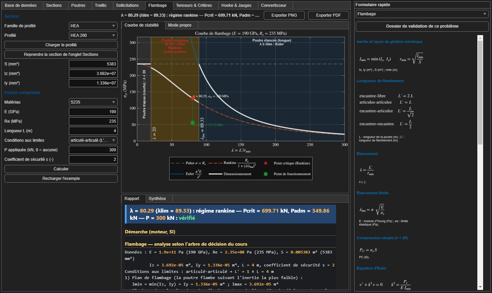
Utilisation. Choisissez un profilé (ou reprenez la section de l'onglet Sections), le matériau, la longueur, les conditions aux limites, la charge P et le coefficient s.
Rappels : l'arbre de décision du cours
- La poutre flambe dans le plan de plus faible inertie : $I_{min} = \min(I_z, I_y)$, puis $r_{min} = \sqrt{I_{min}/S}$.
- Longueur de flambement $L'$ : $2L$ pour encastré-libre, $L$ pour articulé-articulé, $L/\sqrt2$ (≈ 0,7 L) pour encastré-articulé, $L/2$ pour encastré-encastré.
- Élancement $\lambda = L'/r_{min}$ et élancement limite $\lambda_{lim} = \pi\sqrt{E/R_e}$.
- Choix de la formule :
- $\lambda < 20$ : compression simple, $P_c = R_e\,S$.
- $20 \le \lambda < \lambda_{lim}$ : Rankine, $P_{cr} = \dfrac{R_e\,S}{1 + (\lambda/\lambda_{lim})^2}$.
- $\lambda \ge \lambda_{lim}$ : Euler, $P_{cr} = \dfrac{\pi^2 E\,I_{min}}{L'^2}$.
- Vérification : $P \le P_{adm} = P_{cr}/s$.
- $I_{min} = 1{,}336\cdot10^7$ mm⁴ et $S = 5383$ mm², donc $r_{min} = 49{,}8$ mm.
- $\lambda = 4000 / 49{,}8 = 80{,}3$ et $\lambda_{lim} = \pi\sqrt{190\,000/235} = 89{,}3$. On est dans la zone de Rankine.
- $P_{cr} = \dfrac{235 \times 5383}{1 + (80{,}3/89{,}3)^2} = \dfrac{1\,265\,000}{1{,}808} = 699{,}7$ kN, donc $P_{adm} = 349{,}9$ kN ≥ 300 kN : vérifié.
13. Onglet Tenseurs & Critères
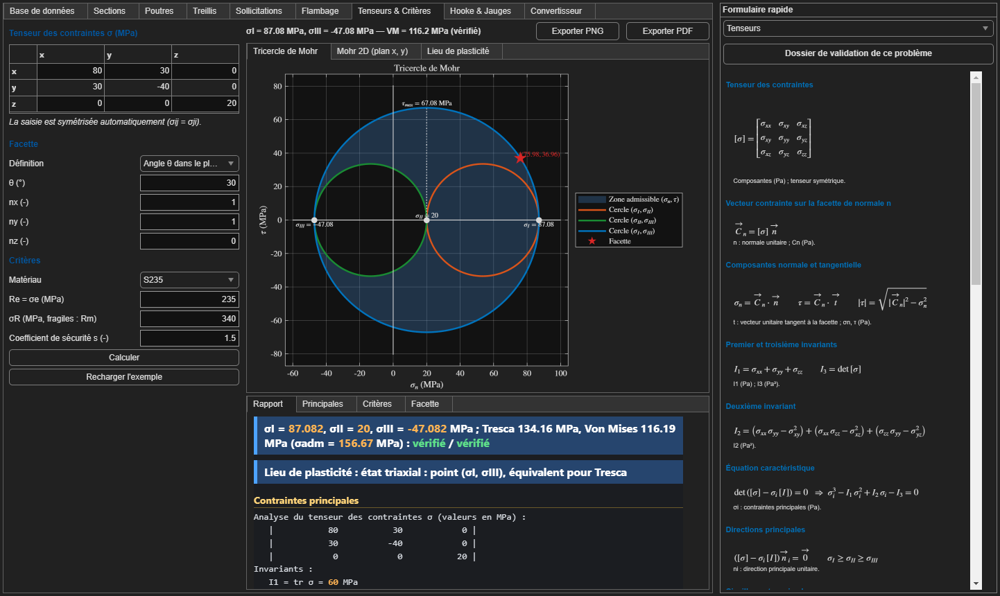
Utilisation. Entrez le tenseur des contraintes 3×3 en MPa (il est symétrisé automatiquement), une facette (par un angle θ ou une normale n), le matériau et s. L'onglet Poutres peut aussi envoyer l'état de contrainte d'un point.
Rappels
- Vecteur contrainte sur une facette de normale $\vec n$ : $\vec C = [\sigma]\,\vec n$, avec une composante normale $\sigma_n$ et une composante tangentielle $\tau$.
- Contraintes principales : valeurs propres de $[\sigma]$, solutions de $\sigma^3 - I_1\sigma^2 + I_2\sigma - I_3 = 0$. On les classe : $\sigma_I \ge \sigma_{II} \ge \sigma_{III}$.
- Cercle de Mohr en 2D : centre $\dfrac{\sigma_x + \sigma_y}{2}$, rayon $\sqrt{\left(\dfrac{\sigma_x - \sigma_y}{2}\right)^2 + \tau_{xy}^2}$.
- Tresca : $\sigma_I - \sigma_{III} \le R_e/s$.
- Von Mises : $\sigma_{VM} = \sqrt{\tfrac12\left[(\sigma_I-\sigma_{II})^2 + (\sigma_{II}-\sigma_{III})^2 + (\sigma_I-\sigma_{III})^2\right]} \le R_e/s$.
- Dans le plan (x, y), le centre vaut 20 et le rayon $\sqrt{60^2 + 30^2} = 67{,}08$. Les contraintes principales sont donc $20 \pm 67{,}08$, soit 87,08 et −47,08. La troisième est σz = 20.
- Tresca : $87{,}08 - (-47{,}08) = 134{,}2$ MPa ≤ 156,7 MPa, vérifié.
- Von Mises : $\sqrt{\tfrac12(67{,}08^2 + 67{,}08^2 + 134{,}16^2)} = 116{,}2$ MPa, vérifié. Von Mises est toujours un peu moins sévère que Tresca.
14. Onglet Hooke & Jauges
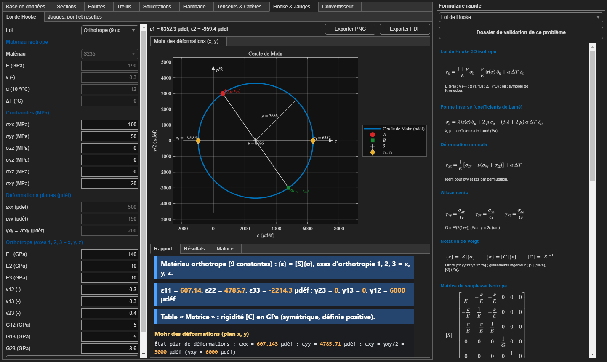
Loi de Hooke
Elle relie les contraintes et les déformations. En isotrope : $\varepsilon_{xx} = \dfrac{1}{E}\left[\sigma_{xx} - \nu(\sigma_{yy} + \sigma_{zz})\right] + \alpha\,\Delta T$ et $\gamma_{xy} = \tau_{xy}/G$. Sous forme matricielle : $\{\varepsilon\} = [S]\{\sigma\}$, et l'inverse $\{\sigma\} = [C]\{\varepsilon\}$. Les déformations ont elles aussi un cercle de Mohr, avec $\gamma/2$ en ordonnée.
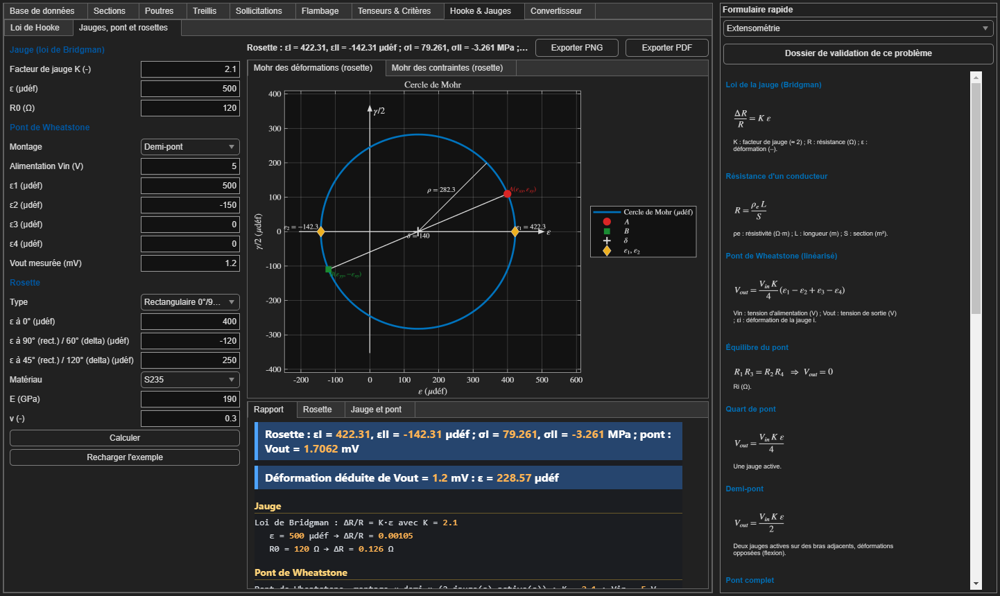
Extensométrie
- Jauge : $\dfrac{\Delta R}{R} = K\,\varepsilon$, avec un facteur de jauge K ≈ 2. Exemple : 500 µdéf avec K = 2,1 et R = 120 Ω donne ΔR = 0,126 Ω, une variation minuscule, d'où le pont.
- Pont de Wheatstone : $V_{out} = \dfrac{V_{in} K}{4}(\varepsilon_1 - \varepsilon_2 + \varepsilon_3 - \varepsilon_4)$. Les jauges opposées s'additionnent et les jauges adjacentes se soustraient, ce qui permet de compenser la température.
- Rosette : 3 jauges à 0°, 45° et 90° (rectangulaire) ou à 0°, 60° et 120° (delta) permettent de retrouver $\varepsilon_x$, $\varepsilon_y$ et $\gamma_{xy}$. On en tire ensuite les déformations principales, puis les contraintes avec Hooke en contraintes planes.
14 bis. Onglet Convertisseur et dossier de validation
Les champs de saisie gardent des unités fixes (mm, m, kN, MPa…). Pour convertir une valeur avant de la saisir, ouvrez l'onglet Convertisseur : choisissez la grandeur, entrez la valeur, puis les unités De et Vers. Le résultat s'affiche en grand, le tableau donne la valeur dans toutes les unités, et « Copier le résultat » place le nombre dans le presse-papiers. Un tableau rappelle l'unité attendue dans chaque onglet. Exemple : 235 MPa = 34,08 ksi ; 1 in = 25,4 mm. Pour la température, choisissez Écart de température pour un ΔT (champs ΔT de la traction et de Hooke : 50 °C d'écart = 90 °F d'écart) et Température absolue pour une température (0 °C = 32 °F).
15. Sur quoi reposent les calculs
| Source | Ce qui en vient |
|---|---|
Votre cours de RDM (texte du « Master Prompt », recopié dans docs/CAHIER_DES_CHARGES.md) | Toutes les formules, les conventions de signe (torseur = actions à droite), l'arbre de décision du flambage (Euler / Rankine / λlim), les valeurs des matériaux (E = 190 GPa pour les aciers d'usage général, par exemple), les pressions de matage et la formule de la goupille. |
| Théorie classique de la RDM (manuels de référence, également présents sur le web) | Les formules standard, identiques partout : Navier ($\sigma = M y/I$), Huygens, Jourawski, Euler, Castigliano, Ménabréa, Mohr, Tresca, Von Mises et Hooke. Références utiles : le Guide du calcul en mécanique (Fanchon, Nathan), le Mémotech ou les cours de RDM des IUT GMP, et les articles de Wikipédia « Résistance des matériaux », « Flambage », « Cercle de Mohr » et « Critère de von Mises ». |
| Catalogues de profilés (tables Eurocode 3 / fabricants) | Les valeurs h, b, S, I et r des profilés IPE, HEA et HEB. Attention, les axes sont inversés : voir Pièges. |
| Vérification interne | Chaque grandeur est calculée par 2 à 4 méthodes indépendantes (analytique, intégrale, énergétique), et le rapport affiche l'écart entre elles. Les tests automatiques comparent aussi les résultats aux formules connues. Exemple : poutre IPE 200, L = 4 m, q = 10 kN/m. La flèche vaut 9,029 mm par les 4 méthodes, soit exactement $5qL^4/(384EI)$. |
- Aciers S185 à S355 : le cours donne E = 190 GPa. On trouve souvent 210 GPa ailleurs, ce qui donne des flèches environ 10 % plus faibles.
- Aluminium : E = 90 GPa dans le cours, contre 70 à 74 GPa habituellement.
- Titane TA6V : Re = 100 MPa dans le cours, contre environ 830 MPa en réalité.
- Plexiglas : G = 11 GPa dans le cours, alors qu'environ 1,1 GPa serait cohérent. L'application calcule G avec E/(2(1+ν)).
16. Pièges fréquents
- Iz et Iy inversés par rapport aux catalogues. Dans l'application, l'axe fort d'un I debout est $z$ (flexion dans le plan x, y). Les catalogues Eurocode appellent cet axe $y$. Donc $I_z$(application) = $I_y$(catalogue).
- Signes des charges : une force vers le bas s'écrit $F_y < 0$, et une charge répartie vers le bas aussi.
- Unités : sections en mm mais longueurs de poutre en m. En cas de doute, regardez la ligne « Données (SI) » du rapport.
- « NON vérifié » ne veut pas dire que le calcul est faux : c'est le résultat de la vérification. Le rapport indique quel critère n'est pas respecté (résistance, rigidité ou flambage).
- Compression : une barre comprimée (dans un treillis ou un poteau) doit toujours être vérifiée aussi au flambage, pas seulement à σ = N/S.
- Torsion : sur un arbre, c'est souvent la rigidité (θ) qui impose le diamètre, pas la résistance.
Captures régénérables avec run('docs/make_screenshots.m').